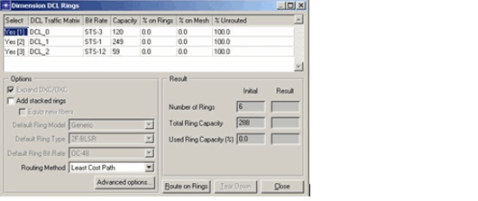
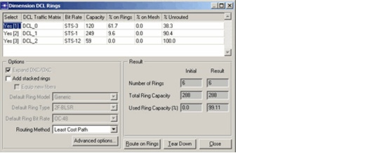

Ring Design > Ring Dimensioning
Ring Dimensioning
With SP Guru Transport Planner you can combine ring and mesh architectures. This section describes how to accommodate traffic on the SONET/ SDH legacy ring infrastructure and off-load the remaining traffic to a DCL mesh architecture.
After you specify a set of rings in your network, you can use them to accommodate DCL traffic. You can reuse the legacy capacity on these rings; for the remaining traffic that cannot be routed on the rings, you can route this traffic in the meshed DCL network (as the result of a grooming operation, for example). Alternatively, you can add stacked rings to existing rings to expand them, then try to route all the traffic on the expanded rings. Even in this case, it is possible that SP Guru Transport Planner cannot route all the traffic on the existing rings. If the rings do not cover the entire network, you can route the remaining traffic again in the meshed network.
To route traffic on SONET rings and dimension the rings, open the Dimension DCL Rings dialog box (Design > Dimension DCL Rings). This dialog box lists all DCL traffic matrices, their bit rate and total capacity, and how they have been routed so far. You can include multiple DCL traffic matrices in one operation; all selected matrices (those whose Select field is set to Yes(x)) are considered by the dimensioning algorithm.
Figure 12-7 Dimension DCL Rings Dialog Box Before a Dimensioning Operation

The typical workflow is to use the Dimension DCL Rings dialog box to accommodate traffic on the rings. Then you can use the routing and grooming action to accommodate any remaining traffic that could not be routed on rings. (See Table 12-2-Dimension DCL Rings Dialog Box for information on the available options and fields.)
When the ring-dimensioning operation completes, the traffic matrix table shows the traffic that has been routed on the rings, the percentage that has been routed on the mesh, and the percentage of traffic that is currently unrouted. You can use the Result fields to compare the network state before and after ring dimensioning.
Figure 12-8 Dimension DCL Rings Dialog Box After a Dimensioning Operation

| Home © 1987-2007 OPNET Technologies, Inc. All Rights Reserved. This software may be covered by one or more U.S. Patents. See complete patent notice in the Legal Notices section. OPNET Support Center |